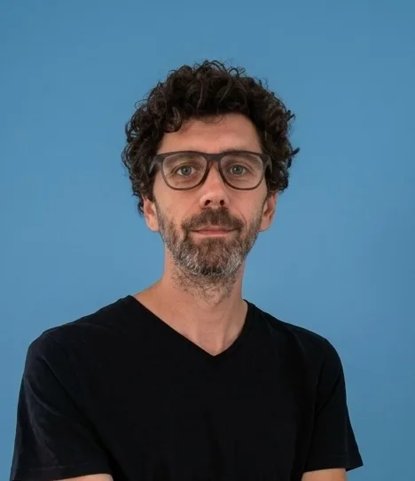

{{m.period}}
{{m.client}}
{{m.place}}
{{m.role}}
{{m.hook}}
- {{it.t}}
- {{s.t}}
Toulouse, France · Freelance depuis 2014
Développeur fullstack senior
20 ans d'expérience. J'interviens sur l'ensemble du cycle de vie des applications web et des plateformes métier : architecture, développement, intégration continue (CI/CD), mise en production, maintenance, optimisation des performances et évolution des solutions existantes.

Utilisation de Claude Code comme assistant de développement : analyse et prise en main de bases de code existantes, refactorisation, rédaction de tests, revue de code et automatisation des tâches récurrentes. Intégration de ces outils aux processus de développement (Git, CI/CD) tout en garantissant la qualité, la maintenabilité et la sécurité du code produit.
Intégration de fonctionnalités d'IA dans les applications web : génération et traduction de contenu, assistants conversationnels, aide à la contribution et interconnexion avec des CMS, CRM, bases documentaires et outils métier via MCP.
Acolad Développement — freelance depuis oct. 2014
{{m.period}}
{{m.place}}
{{m.role}}
{{m.hook}}
{{o.text}}
2017 – 2022
Toulouse
Formateur développeur web
Formation de publics en reconversion, d'étudiants et de développeurs juniors sur l'ensemble du cycle de vie d'une application web, deux jours par semaine en parallèle de mes missions freelance.
2012 – 2014
Toulouse
Développeur Drupal
Développements Drupal pour des clients publics et privés au sein d'une agence web toulousaine.
Licence professionnelle « Développeur d'applications web »
Université Toulouse 1 Capitole · 2006 – 2007
BTS Informatique de gestion
Lycée Ozenne, Toulouse · 2004 – 2006